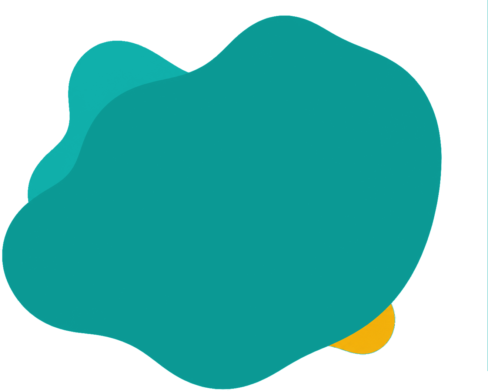
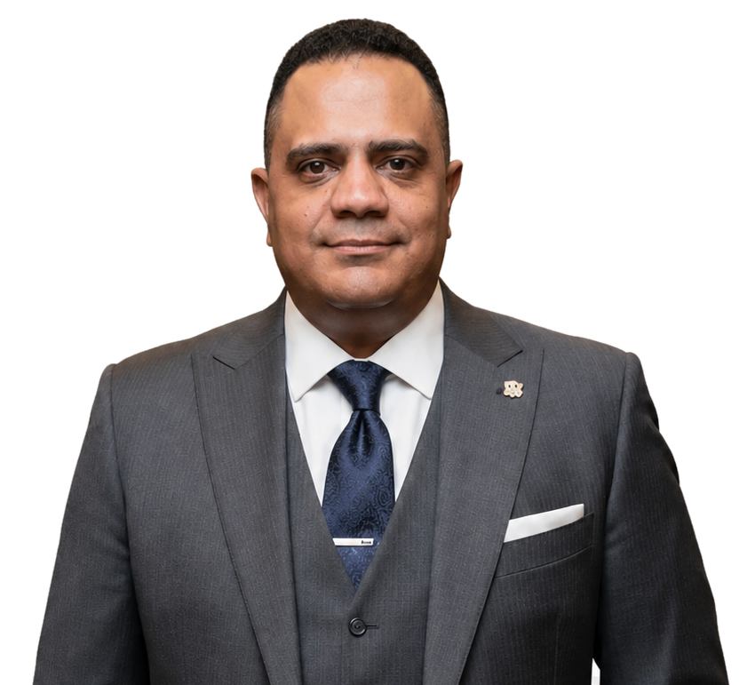

I turn complex institutional challenges into technology that works.
Enterprise systems, digital transformation, data and analytics, technology-enabled operations and governance — connecting strategy with delivery in complex institutional environments.


Proof across technology and transformation.
Each story reveals a different institutional technology challenge: modernization, governance, data, operations and scale.
MedIQ Core Modernization
A live institutional ecosystem modernized for reliability, maintainability and scale, with core modernization delivered in-house.
E‑Tender
10 linked steps · 30 stages · 15 Chairman approvals · 20+ governed roles.
Assets & Location
242,816 devices · 164 entities · GS1 integration · QR/GPS-enabled location approach.
Technology is a leadership discipline.
Strong outcomes come from connecting architecture with people, data, governance, delivery, operations and continuous improvement.
Understand
People, process, data, objectives, constraints and dependencies.
Prioritize
Focus technology investment on outcomes, risk and institutional value.
Design
Shape systems, data, integrations, controls and operating models.
Deliver
Move from plans to controlled increments with visible ownership.
Operate
Build reliability, security, support, adoption and accountability.
Improve
Use evidence, analytics and feedback to drive the next decision.
MedIQ received the Pharma Awards 2026 Digital Transformation Award. Programme recognition is kept separate from personal recognition.